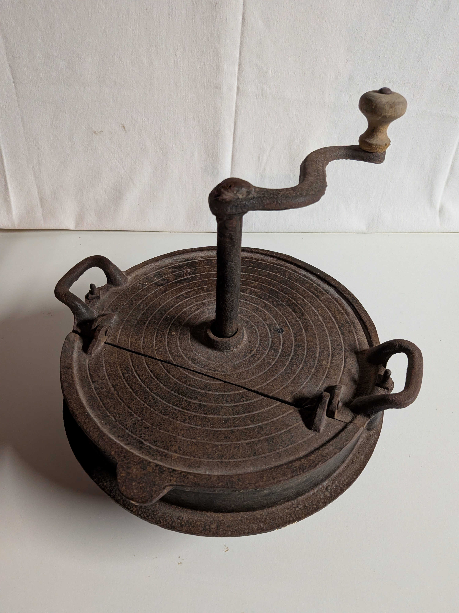

Haushaltsgeräte mit Kurbel
Diese Rubrik zeigt mechanische Haushaltsgeräte, die ohne Strom betrieben werden – durch Handkurbel oder Drehmechanik. Sie stammen aus der ersten Hälfte des 20. Jahrhunderts und zeigen die Vielfalt handwerklicher Küchenarbeit.

Kaffeemühle
Eine klassische Handkaffeemühle mit Kurbel und Holzgehäuse. Das Mahlwerk aus Gusseisen zerkleinert die Bohnen gleichmäßig – ein typisches Gerät aus der Zeit vor elektrischen Mühlen.

Passiergerät
Mit einer Kurbel wird ein Metallflügel über ein Sieb bewegt, um Obst oder Gemüse zu Mus zu verarbeiten. Besonders beliebt für Apfelmus und Kartoffelpüree.

Röster
Ein handbetriebenes Gerät zum Rösten von Kaffee oder Getreide. Die Kurbel bewegt eine Trommel über der Hitzequelle – ein frühes Beispiel für gleichmäßige Röstung.

Dosenverschlussmaschine Lanico TR38 (ca. 1955–1965)
Diese handbetriebene Dosenverschlussmaschine des Bremer Herstellers Lanico wurde in den 1950er–1960er Jahren gefertigt. Mit der Kurbel wird der Verschlusskopf bewegt, der den Deckel fest auf die Konservendose presst. Solche Geräte wurden in Haushalten, kleinen Betrieben und Hofschlachtungen eingesetzt, bevor elektrische Maschinen üblich wurden.
Die Konserventechnik selbst geht in Deutschland auf Heinrich Züchner zurück, der bereits 1830 die erste Konserve herstellte.

Fleischwolf Alexanderwerk 20N (ca. 1940–1955)
Ein massiver Fleischwolf aus Gusseisen des Herstellers Alexanderwerk, Remscheid. Der Typ 20N ist ein klassisches Modell für den Haushalt und kleine Metzgereien. Mit der Kurbel wird eine Schnecke im Inneren bewegt, die Fleisch oder Gemüse durch eine Lochscheibe presst. Die robuste Bauweise und Holzkurbel zeigen die typische Nachkriegsfertigung.

Fleischwolf Alexanderwerk 10 (ca. 1930–1945)
Ein kleinerer Fleischwolf aus der gleichen Serie wie der Typ 20N. Der Typ 10 war für den privaten Haushalt gedacht und zeichnet sich durch seine kompakte Form und einfache Handhabung aus. Die Geräte dieser Zeit bestehen vollständig aus Gusseisen und sind mit einer Holzkurbel ausgestattet